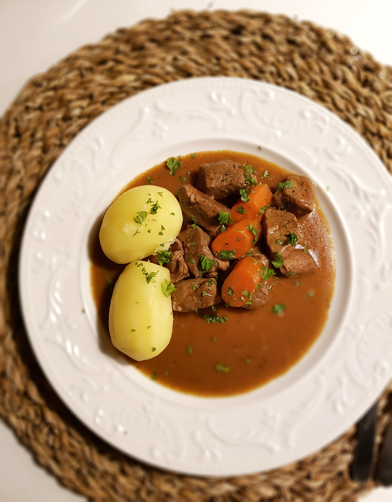

Kalops

About
The Kaops dish is a traditional Swedish stew made of beef.
The prominent flavours are Allspice and bayleafes.
Ingredients
Serves 4
- 1 kg whole chuch of beef
- 1 medium sized onion
- 2 table spoons plain flour
- 1 liter calf broth
- 20 whole allspice seeds
- 5 bayleafes
- 4 Carrots
- Potatoes
- Butter
- Salt and Pepper
Steps
- Cut the chuch into 3cm cubes
- Heat up a pot to high
- Fry the cubes on all size until they have a good sear
- Chop the onion into medium size bits
- Add the copped onions to the meat and fry for a couple of minutes
- Dust flour over the meat and stir to incorporate
- Add broth until it covers
- Add Bayleafes and allspice
- Stir and bring to a boil. Let simmer under lid for 75 minutes. Stir the pot occationally
- Cut carrots into smaller pieces
- Add carrots to the stew
- Peal and boil potatoes
- When potatoes are done so are the stew
Enjoy!